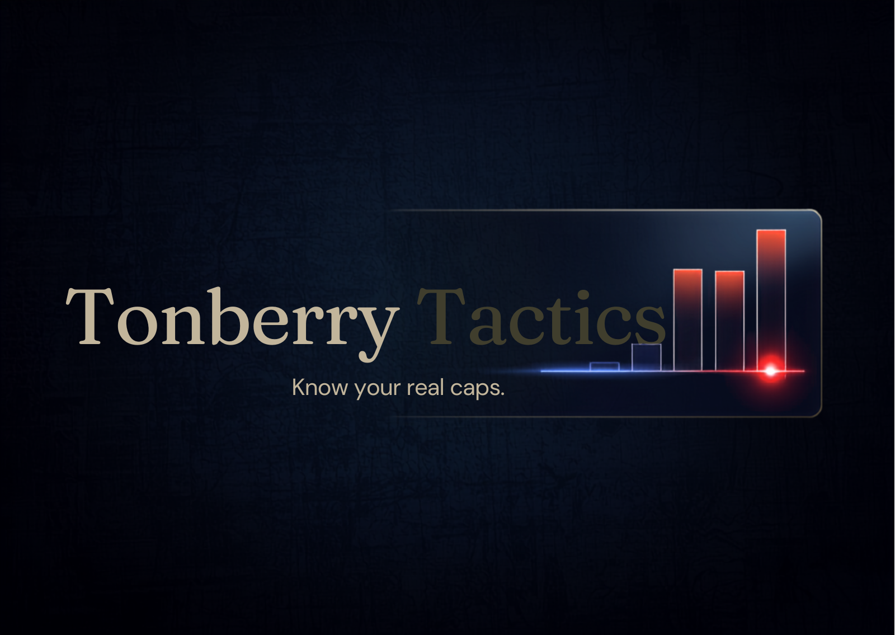

Real substat totals, straight from the game — and exactly how far each one sits from its cap.
No account, no upload. The export string never leaves your clipboard until you paste it.
Run /ttexport in the plugin. Your gear, materia, and full substat totals copy as a single string.
Drop the string in. Tonberry Tactics audits every meld — under-tier, overcap, wrong-stat — and ranks the fixes.
Copy the plan back, run /ttimport, and the plugin walks you through each meld at the board.
Schema v2 carries your actual totals — so every bar reads a real value against a real cap.

Reads your post-gear substat totals and shows the exact gap to each cap — no spreadsheets, no guesswork.
Flags every wasted point — wrong-stat melds, over-tier sockets, and stats pushed past their ceiling.
Ranks the highest-impact fixes and walks you through them at the board, one socket at a time.
Tonberry Tactics is a Dalamud plugin with a companion web optimizer. Free, open, and built for raiders chasing the cap.